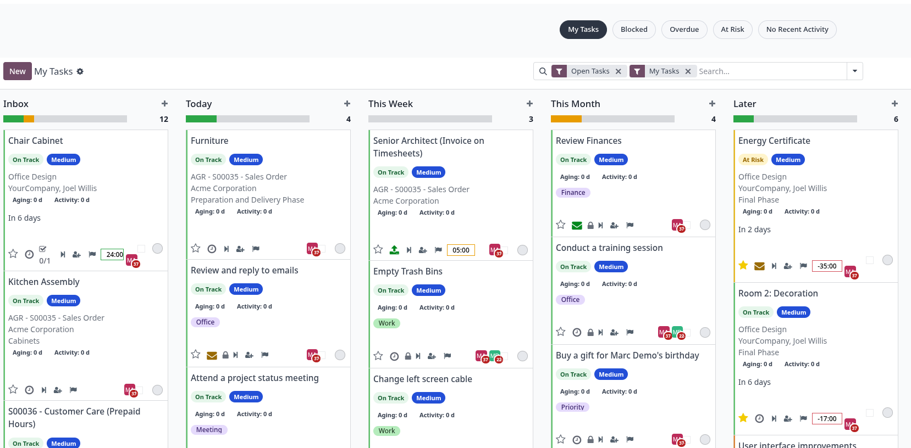
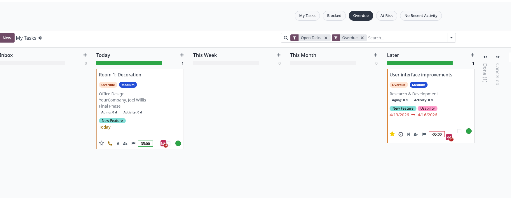

Key Features
Automatic Health State
4-Level Priority System
Assignee Workload Indicator
Quick Actions on Card
Built-In Status Filters
Configurable Thresholds & Rules

The standard Project task kanban is extended with rich visual indicators on every card: colour-coded health state (On Track, At Risk, Overdue, Blocked), priority level badge (Highest / High / Medium / Low), assignee workload indicator and quick-action buttons to cycle priority, assign yourself or move the task to the next stage — all without opening the task.

Tasks whose deadline has passed are automatically flagged as Overdue and receive a distinct colour ribbon. A dedicated filter lets you isolate all overdue tasks across every project column in one click, so nothing slips through unnoticed.

Blocked
Task state is Blocked or Waiting (pending on another task). A blocked reason can be recorded and shown on the card.
Overdue
date_deadline < now and the task is not closed. Takes priority over At Risk.
At Risk
Any of: deadline within the next N days (default 2), task not updated for ≥ S days (stale, default 5), or stage unchanged for ≥ A days (aging, default 3). All thresholds are configurable in Settings.
On Track
None of the above conditions apply. The task is progressing normally within its deadline and activity window.
Custom Kanban Rules
Beyond the automatic logic, you can define Kanban Rules with any Odoo domain. Rules are evaluated by priority and the first match wins, overriding the default state. This lets you highlight specific customers, tags, or any field combination with a custom colour and label.
Automatic Health State
4-Level Priority System
Assignee Workload Indicator
Quick Actions on Card
Built-In Status Filters
Configurable Thresholds & Rules